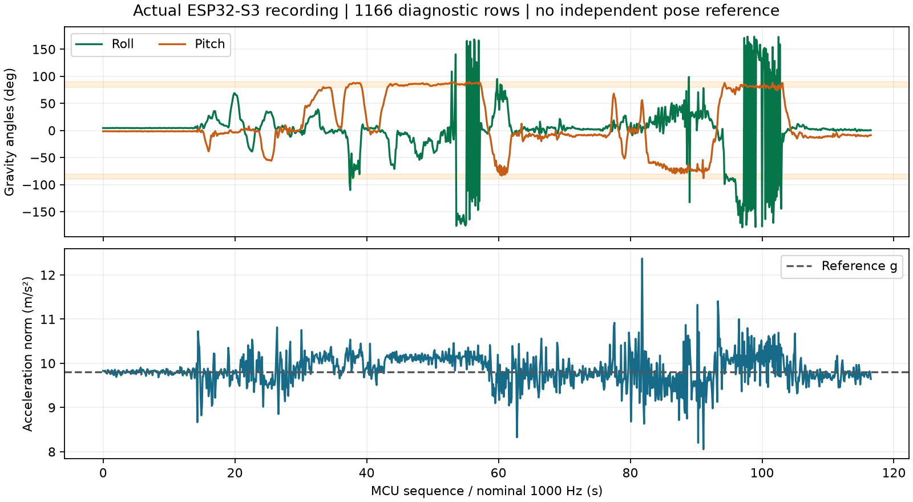

IntelQCopter · Engineering note 01 · 30 October 2026
Why can an angle jump
when the drone tilts?
Measured sensor behavior, the geometry of attitude, and the next estimator for IntelQCopter.
Engineering result. Calibrated acceleration provides useful tilt information near hover, but large tilts expose coordinate ambiguity and movement disturbs the gravity reference. IntelQCopter needs continuous gyro-based attitude propagation with accelerometer correction before attitude feedback is qualified. That estimator is planned; the current measurements do not validate flight control.
1 · What the recorded data tells us

1166 diagnostic records were compared with independently recomputed angles. Maximum differences were below 0.001 degrees, consistent with printed rounding. Pitch reached89.573degrees. This verifies the logged computation, not true physical attitude: no independent orientation reference was recorded.
| Actual hardware evidence | Limit |
|---|
| ESP32-S3, MPU6050, calibrated preview serial log | No motors/PID; no physical flight acceptance |
| Angle values match the acceleration formulas | Movement can make acceleration differ from gravity |
| Original data preserved; no refitting | Physical axis direction is still provisional |
2 · The geometry, step by step
Calibrated aₓ, aᵧ, a_z→ gravity-angle formulas→ serial D record→ live plot + warnings
roll φ = atan2(aᵧ, a_z)
pitch θ = atan2(−aₓ, √(aᵧ² + a_z²))
aₓ, aᵧ, a_z are calibrated accelerometer components in the candidate drone frame, measured in m/s²; φ and θ are the displayed angles. atan2(y,x) determines an angle with quadrant information; results are converted from radians to degrees. In the ideal stationary convention used by these formulas:
aₓ = −g sin θ
aᵧ = g sin φ cos θ
a_z = g cos φ cos θ
√(aᵧ² + a_z²) = g |cos θ|
g≈9.80665m/s² is reference gravity. These ideal relationships assume gravity dominates, correct mounting/frame interpretation and negligible translation. At rollφ=90° and pitchθ=0°, aᵧ≈g: pitch remains well-conditioned. At pitchθ→±90°, both aᵧ and a_z approach zero: their ratio no longer reliably tells us roll. Small measurement changes then produce large roll changes.

δφ ≈ (a_z δaᵧ − aᵧ δa_z) / (aᵧ² + a_z²)
δ denotes a small change; the denominator explains why roll sensitivity grows near vertical pitch. This is the local derivative of atan2, not a measured noise law. It does not imply that every reported fluctuation has this cause. Euler roll also wraps at±180°, which can draw a jump across the plot.
3 · How the drone will estimate attitude
Gyro: angular velocity→ propagate rotation q← accelerometer gravity correction→ attitude error → PID → motor mixer
Gyroscopes track rapid changes but accumulate bias error. Accelerometers constrain gravity direction when translation is small, but cannot provide absolute heading. Their fusion is required for a useful attitude estimate. No magnetometer/GPS heading correction is validated by this measurement.
4 · Four numbers for one rotation
q = w + xi + yj + zk = (w, v)
v = (x, y, z), w² + x² + y² + z² = 1
A quaternion extends complex arithmetic. The symbols i,j,k are imaginary basis units; i²=j²=k²=ijk=−1. Multiplication is order-dependent (ij=k, ji=−k). For attitude, a unit quaternion represents a 3D rotation:
q = (cos(α/2), u sin(α/2))
α is the rotation angle and u a unit vector along its axis. w is the scalar part; v is the vector part. Four components satisfy one unit-length constraint, leaving three local degrees of freedom. q and −q represent the same physical rotation.
Example: 90° about X → q = (√2/2, √2/2, 0, 0)
The components are not independent roll, pitch and yaw angles. They encode a rotation together. A quaternion state avoids the Euler-coordinate singularity in propagation, while the displayed Euler angles remain ambiguous at singular poses. This does not eliminate sensor noise, drift, or the need to validate feedback directions.
5 · Next project milestone
Implement and evaluate gyro/accelerometer attitude fusion on the ESP32 with motors disabled. Compare response during a guided tilt and return, then qualify command directions and PID/mixer behavior. Existing calibration remains the development baseline. The actual measurements above precede this proposed fusion; they are not evidence that it already works.
Provenance: source plot revision c5d6966; actual recording 20261030T221524; hardware source/analysis identities and raw-log SHA256 are in evidence.json. Diagnostic rows are nominally 10 Hz; charts are not 1000 Hz raw attitude ground truth. Geometry figure is an analytic ideal model, not a second experiment. Original logs remain private and preserved.